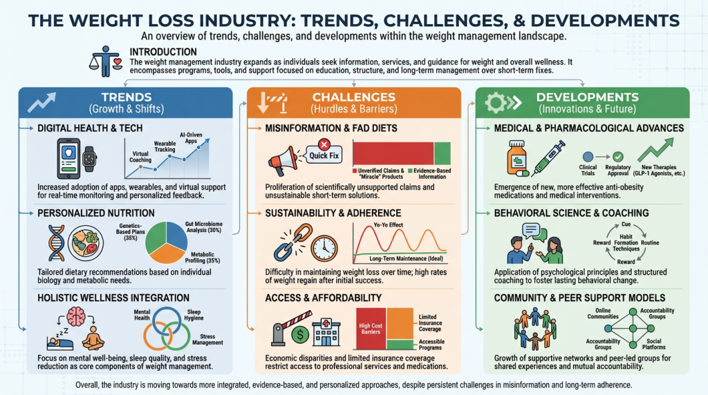
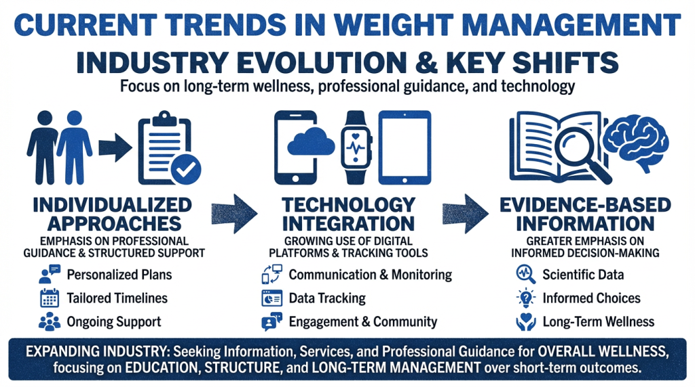
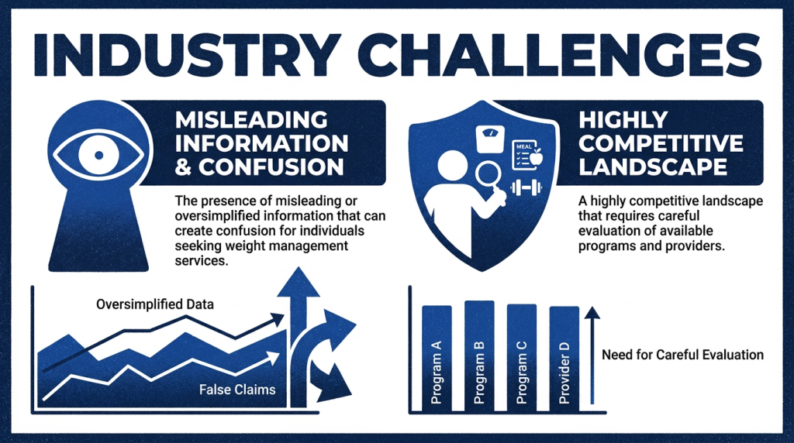
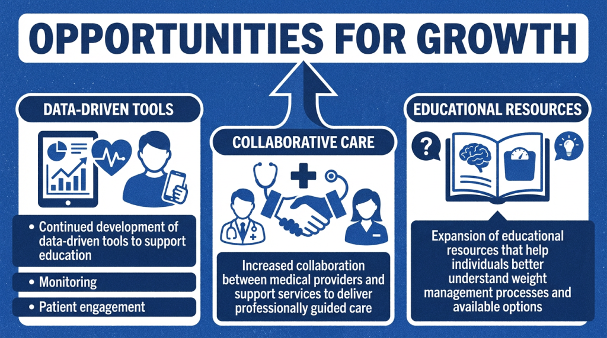

A practical look at the modern weight loss industry and why many adults prefer a provider-led, medically supervised path with clear guidance and clinical oversight.
The weight loss industry includes a wide range of programs, products, clinics, apps, and coaching models. This can make it difficult for patients to compare options and choose a path that fits their health needs.
Some solutions focus on convenience or marketing. Others focus on individualized care, clinical review, and ongoing support.
Weight Loss Davie is built around a provider-led model designed to support informed decisions, individualized planning, and consistent follow-through.
Patients often see a mix of online programs, supplements, coaching offers, and medical clinics.
A provider-led process helps reduce confusion by organizing next steps around medical history and clinical review.
Education, monitoring, and follow-up are key parts of a medically supervised approach.

Patients are often exposed to aggressive marketing, broad promises, and mixed messages. It can be hard to tell which services offer real medical oversight and which do not.
Many programs use generalized templates. A provider-led process focuses on individualized planning based on health history, goals, and clinical needs.
Some services focus mainly on getting people started, with limited long-term structure. Ongoing follow-up and practical support are important for many patients.
Patients often have questions about whether an approach is appropriate for their situation. Clinical evaluation and provider review help support safe, informed decisions.
Some systems feel transactional or difficult to navigate. Clear communication and direct provider guidance can improve confidence and follow-through.
With so many opinions online, many adults delay taking action. A structured intake and consultation process creates a clear starting point.

Weight Loss Davie is a provider-led medical weight management practice in Davie, Florida focused on individualized planning, clinical oversight, and ongoing support.
Patients benefit from a structured process based in South Florida with clear communication and practical next steps.
Learn more about Marie-Claude Dubuc, PA-C on the Provider page and the clinical experience behind the practice.
In a crowded weight loss industry, a provider-led process gives you a structured path with clinical oversight, patient education, and individualized support.

Reach out with general questions about the process, registration, and next steps.
Use the Register page to create your account and begin the intake process for provider review.
Visit the FAQs page for answers about the process, what to expect, and how care is structured.
Learn more about Marie-Claude Dubuc, PA-C and the provider-led care model on the Provider page.

Begin with structured guidance, individualized planning, and ongoing support in a professional medical weight management setting.
RegisterProvider-led medical weight loss care built around you — individualized, transparent, and accessible.
Schedule a Consultation